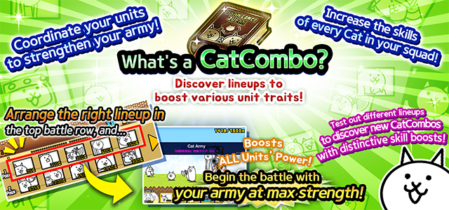

What is a CatCombo?

About CatCombos
★ What is a CatCombo?
Visit the Equip Screen, then arrange the right combination of Cat Units in the first (top) row of your battle formation to unlock special trait and ability bonuses for your Cat Army.
At the beginning of each battle, your CatCombo bonuses will be revealed and applied to your units and/or Cat Base for the duration of the fight.
With the right CatCombo, your bonus might include Unit Attack Up, Unit Defense Up, Cannon Charge Speed Up, or Cat Base HP Up, or one of many other possible powerups!
Any CatCombo you discover will be applied to all units when used - use them wisely to max out the power of your army for critical battles!
*Only Cat Units placed in the first battle row will be counted when forming CatCombos. Be aware that units placed in the second row will not be able to create any CatCombos!
*CatCombos do not require units to be placed in the same order as in the Combo Book. Any Cat in the first row can form a Combo as long as all other units required for that Combo are present in the first row as well!
*You may unlock further CatCombos and skill boosts as you advance through the Story Mode chapters and meet certain other conditions!
About the CatCombo Book
Visit this menu at any time to confirm required units and effects of any Combo Skills you have unlocked.

Tap on the character portrait to display that Unit's Name.
The name and effect of Combo Skills not yet revealed during battle will be hidden until they have been used at least once.

*Required Skills of Characters not yet acquired are also displayed.
★Tapping the (?) hint
Button will display the Rarity of required characters not yet collected for a given Combo Skill.
The color of boxes marked with (?) will indicate the specific form (1st/2nd/True) of the character required.
This icon indicates the 1st (unevolved) form of a Unit.
This icon indicates the 2nd (evolved) form of a Unit.
This icon indicates the 3rd (True) form of a Unit.
Using the Combo Skill name and information as hints, test many combinations and discover lots of new and useful CatCombos!
Combo Effects
● Unit Attack Up
Active units have increased attack power.
● Unit Defense Up
Active units have increased defensive power.
● Unit Speed Up
Active units have faster movement.
● Cannon Start Level Up
Cat Cannon begins the stage partially filled.
● Worker Cat Start Level Up
Worker Cat begins the stage at a higher level.
The battle item "Rich Cat" has priority over this skill.
● Starting Money Up
Begin the stage with money ready in your bank.
● Cat Cannon Power Up
Damage to enemies from the Cat Cannon is increased.
● Cat Cannon Recharge Up
Cat Cannon will recharge at a faster rate.
● Worker Cat Max Up
Maximum amount of money available is increased.
● Cat Base Defense Up
Hit points of the Cat Base increases, can survive more hits!
● Research Power Up
Amount of time before a Cat Unit can be deployed again is decreased.
There is a minimum amount of time that cannot be shortened.
● Accounting Power Up
Bonus money received from defeating enemies is increased.
● Study Power
XP received upon clearing a stage is increased.
● "Strong" Effect Up
Units who are "Strong" against certain enemies have their damage
increased even further, and damage received decreased vs. that type.
● "Massive Damage" Effect Up
Units with "Massive Damage" against enemies have their damage
increased even further against that enemy type.
● "Resistant" Effect Up
Units with "Resistant" against enemies have damage received
from that enemy type decreased even further.
● "Knockback" Effect Up
Units with "Knockback" abilities against enemies have the distance
of their knockback effects increased vs. that enemy type.
● "Slow" Effect Up
Units with "Slow" abilities against enemies have the length of
time of their Slow effect increased vs. that enemy type.
● "Freeze" Effect Up
Units with "Freeze" abilities against enemies have the length of
time of their Freeze effect increased vs. that enemy type.
● "Weaken" Effect Up
Units with "Weaken" abilities against enemies have the length of
time of their Weaken effect increased vs. that enemy type.
● "Strengthen" Effect
Units with "Strengthen" abilities will be able to increase their
attack power even further beyond their normal amount.